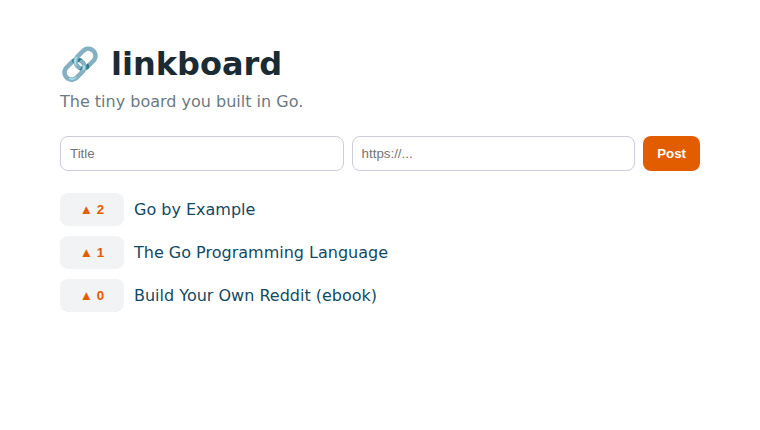

tidy JSON errors, a little validation, and a real frontend served from Go
Until now each handler set headers and encoded JSON by hand, and errors came out as plain text.
Let's fix both with two small helpers, and move all the handlers into their own file,
handlers.go. Here's the whole file:
package main
import (
"database/sql"
"encoding/json"
"errors"
"net/http"
"strconv"
"strings"
)
// homeHandler serves the single-page frontend at "/".
func homeHandler(w http.ResponseWriter, r *http.Request) {
http.ServeFile(w, r, "index.html")
}
// listLinksHandler — GET /links?sort=new|top
func listLinksHandler(w http.ResponseWriter, r *http.Request) {
links, err := listLinks(r.URL.Query().Get("sort"))
if err != nil {
writeError(w, http.StatusInternalServerError, "could not load links")
return
}
writeJSON(w, http.StatusOK, links)
}
// createLinkHandler — POST /links Body: {"title": "...", "url": "..."}
func createLinkHandler(w http.ResponseWriter, r *http.Request) {
var input struct {
Title string `json:"title"`
URL string `json:"url"`
}
if err := json.NewDecoder(r.Body).Decode(&input); err != nil {
writeError(w, http.StatusBadRequest, "body must be valid JSON")
return
}
// Validate: a title, and a url that actually looks like one.
input.Title = strings.TrimSpace(input.Title)
if input.Title == "" || len(input.Title) > 200 {
writeError(w, http.StatusUnprocessableEntity, "title must be 1-200 characters")
return
}
if !strings.HasPrefix(input.URL, "http://") && !strings.HasPrefix(input.URL, "https://") {
writeError(w, http.StatusUnprocessableEntity, "url must start with http:// or https://")
return
}
link, err := insertLink(input.Title, input.URL)
if err != nil {
writeError(w, http.StatusInternalServerError, "could not save link")
return
}
writeJSON(w, http.StatusCreated, link)
}
// voteHandler — POST /links/{id}/vote
func voteHandler(w http.ResponseWriter, r *http.Request) {
id, err := strconv.ParseInt(r.PathValue("id"), 10, 64)
if err != nil {
writeError(w, http.StatusNotFound, "no such link")
return
}
votes, err := voteLink(id)
if errors.Is(err, sql.ErrNoRows) {
writeError(w, http.StatusNotFound, "no such link")
return
}
if err != nil {
writeError(w, http.StatusInternalServerError, "could not vote")
return
}
writeJSON(w, http.StatusOK, map[string]int64{"id": id, "votes": votes})
}
// writeJSON sends v as JSON with the given status code. The CORS header lets a
// frontend hosted somewhere else call this API from the browser.
func writeJSON(w http.ResponseWriter, status int, v any) {
w.Header().Set("Content-Type", "application/json")
w.Header().Set("Access-Control-Allow-Origin", "*")
w.WriteHeader(status)
json.NewEncoder(w).Encode(v)
}
// writeError sends {"error": "..."} with the given status code.
func writeError(w http.ResponseWriter, status int, msg string) {
writeJSON(w, status, map[string]string{"error": msg})
}What changed and why:
writeJSON / writeError — every response now goes through
these. Errors always look like {"error": "..."}, so
a frontend needs just one way to handle any error.createLinkHandler: a title that's present and not too
long, and a url that actually starts with http. Bad input gets
422 Unprocessable with a helpful message, instead of saving garbage.writeJSON —
Access-Control-Allow-Origin: * — tells browsers that a web page hosted
anywhere is allowed to call this API. You don't strictly need it when the page and API
share a server (like ours), but it's the one line that lets someone host their own frontend
elsewhere and still talk to your board.These are deliberately tiny — a couple of if checks, two 5-line helpers.
The Reddit book grows them into a reusable validator and a full set of error types. You don't need
that yet; you need to feel how the pieces fit. Small first, fancy later.
With handlers in their own file, main.go shrinks to “open the database, list the
routes, start the server” — plus one new route that serves our web page at /:
// linkboard, chapter 4: a friendlier API (JSON errors + validation) and a tiny
// web page served right from the same server. main.go is now just wiring.
package main
import (
"log"
"net/http"
)
func main() {
if err := openDB("linkboard.db"); err != nil {
log.Fatal(err)
}
log.Println("database ready: linkboard.db")
mux := http.NewServeMux()
mux.HandleFunc("GET /{$}", homeHandler) // the web page, only at "/"
mux.HandleFunc("GET /links", listLinksHandler)
mux.HandleFunc("POST /links", createLinkHandler)
mux.HandleFunc("POST /links/{id}/vote", voteHandler)
log.Println("linkboard listening on http://localhost:4000")
log.Fatal(http.ListenAndServe(":4000", mux))
}GET /{$} is a special pattern: the {$} means “match only the exact
path /”, so it serves the page at the root without swallowing /links.
Save this as index.html next to your Go files. It's plain HTML and vanilla JavaScript —
it fetches your API, lists the links, and wires up the post form and vote buttons:
<!doctype html>
<html lang="en">
<meta charset="utf-8">
<title>linkboard</title>
<style>
body{font:16px/1.5 system-ui,sans-serif;max-width:640px;margin:40px auto;padding:0 16px;color:#1b2b34}
h1{margin-bottom:2px}
p.sub{color:#6b7a82;margin-top:0}
form{display:flex;gap:8px;margin:22px 0}
input{flex:1;padding:9px;border:1px solid #ccd;border-radius:8px}
button{padding:9px 14px;border:0;border-radius:8px;background:#e25c00;color:#fff;font-weight:600;cursor:pointer}
ul{list-style:none;padding:0}
li{display:flex;gap:10px;align-items:center;margin:10px 0}
.vote{background:#f1f3f5;color:#e25c00;min-width:64px}
a{color:#124a63;text-decoration:none}
a:hover{text-decoration:underline}
</style>
<h1>🔗 linkboard</h1>
<p class="sub">The tiny board you built in Go.</p>
<form id="post-form">
<input id="title" placeholder="Title" required>
<input id="url" type="url" placeholder="https://..." required>
<button>Post</button>
</form>
<ul id="list"></ul>
<script>
async function load() {
const res = await fetch('/links?sort=top');
const links = await res.json();
document.getElementById('list').innerHTML = links.map(l =>
`<li><button class="vote" onclick="vote(${l.id})">▲ ${l.votes}</button>` +
`<a href="${l.url}">${l.title}</a></li>`).join('');
}
async function vote(id) {
await fetch('/links/' + id + '/vote', {method: 'POST'});
load();
}
document.getElementById('post-form').addEventListener('submit', async (e) => {
e.preventDefault();
await fetch('/links', {method: 'POST', body: JSON.stringify({
title: document.getElementById('title').value,
url: document.getElementById('url').value,
})});
e.target.reset();
load();
});
load();
</script>Run go run ., visit http://localhost:4000, and there it is —
a working site you built end to end, backend and front:

# junk is now politely rejected:
$ curl -X POST localhost:4000/links -d '{"title":" ","url":"https://x.com"}'
{"error":"title must be 1-200 characters"}
$ curl -X POST localhost:4000/links -d '{"title":"nope","url":"ftp://x"}'
{"error":"url must start with http:// or https://"}
$ curl -X POST localhost:4000/links -d '{oops'
{"error":"body must be valid JSON"}
# and the CORS header rides along on every JSON response:
$ curl -i localhost:4000/links | grep -i access-control
Access-Control-Allow-Origin: *writeJSON/writeError — one shape, less repetition.422 with a message; bad JSON is 400.GET /{$} serves the page only at /; http.ServeFile sends the file.Next up: turn it into a single shippable program — and see the map from this little board to the full Reddit clone.